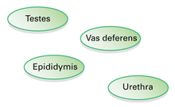
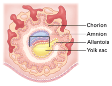

Reviewing Concepts
Multiple Choice
Choose the letter of the best answer.
1. Which organ of the female reproductive system produces eggs?
a. oviduct
b. ovary
c. uterus
d. vagina
2. Which list best describes the path of sperm from the testis to the site of fertilization?
a. penis, vas deferens, ovary, oviduct
b. ovary, oviduct, penis, epididymis
c. vas deferens, penis, vagina, oviduct
d. scrotum, oviduct, penis, ovary
3. What process stimulates the secondary oocyte to complete meiosis II?
a. ovulation
b. sperm penetrating egg
c. ejaculation
d. menstruation
4. The breakdown of the endometrium each month is caused by
a. high levels of estrogen.
b. high levels of progesterone.
c. low levels of estrogen.
d. low levels of FSH and LH.
5. Which list shows stages of development in the order in which they occur?
a. zygote, embryo, fertilization
b. blastocyst, zygote, embryo
c. trophoblast, embryo, blastocyst
d. zygote, embryo, fetus
6. During which developmental period do secondary sex characteristics usually appear?
a. adulthood
b. adolescence
c. childhood
d. infancy
7. Which statement correctly describes menopause?
a. It occurs during adolescence.
b. The endometrium breaks down.
c. Ovulation stops.
d. Men stop manufacturing sperm.
Short Answer
8. Describe the differences and similarities between egg and sperm production.
9. What role does FSH have in the ovarian and menstrual cycles?
10. Compare and contrast the effects of releasing hormone from the hypothalamus on the female and male reproductive systems.
11. What is ovulation? What organs are involved in ovulation?
12. If it only takes one sperm to fertilize an egg, explain an advantage of hundreds of millions of sperm being deposited during intercourse.
13. Describe the process of cleavage.
14. Explain the two ways twins are formed.
15. Describe the structure and function of the placenta.
16. Describe the role of oxytocin in childbirth.
17. At what point in the human development process do reproductive organs become functional?
18. What is an STD? Give an example of a bacterial STD and a viral STD.
Visualizing Concepts
19. Use the ovals below to complete a flowchart showing the pathway of sperm in the male reproductive system. Explain what occurs at each step.

Applying Concepts
Analyzing Information
20. Analyzing Graphs This graph indicates hormone levels during a portion of an average ovarian/menstrual cycle. Use the graph to answer the questions below.

a. On which day is the estrogen level highest? What effect does this peak in estrogen have on the levels of FSH and LH? Explain.
b. Around day 13, which hormone is at the highest level? Why?
c. What ovarian structure contributes to the rising level of progesterone during the last half of the time frame shown? What effect does increased progesterone levels have on the uterus?
21. Analyzing Diagrams Use the diagram below to answer the following questions.

a. What is the significance of the area within the box?
b. Which labeled structure produces the first blood cells in the embryo?
c. Describe the events from fertilization to the stage of development shown in the diagram.
Critical Thinking
22. Relating Cause and Effect From what you have read in this chapter about how nutrients are passed from mother to baby, explain the dangers to the baby if the mother drinks alcohol, smokes tobacco, or takes drugs during pregnancy.
23. Relating Cause and Effect Other than regulating ovarian and menstrual cycles in females and sperm production in males, name other effects estrogen and testosterone have on adolescents.
24. Making Generalizations Suppose a friend tells you that only people who are ready to have children need to worry about their reproductive health. How would you respond to this statement?
25. What's Wrong With These Statements?
Briefly explain why each statement is inaccurate or misleading.
a. Fertilization of an egg by a sperm can only take place on the day of ovulation.
b. The hormone estrogen regulates the menstrual and ovarian cycles.
c. Mothers share blood with the fetus.
d. Twins always develop from a single fertilized egg.
Performance Assessment
Writing In this chapter you read about the many stages of life. Choose which stage you think is the best time of life. Describe the reasons for your choice. Then, interview a grandparent or an older family friend. Ask him or her which stage has been the most enjoyable. Were your choices the same?